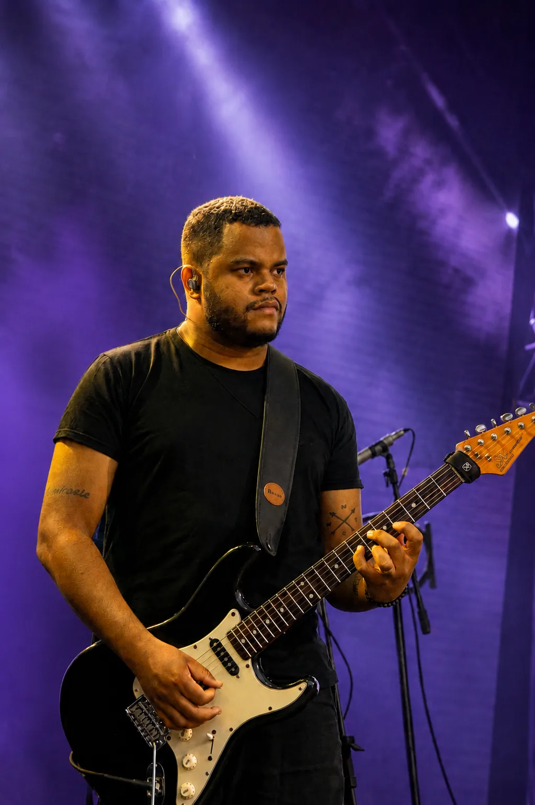
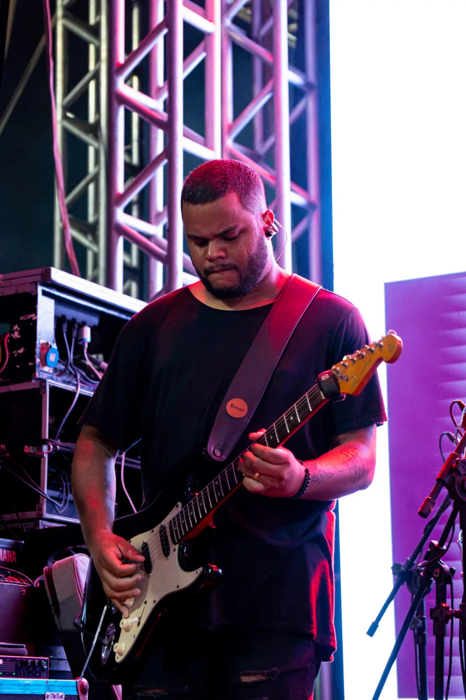
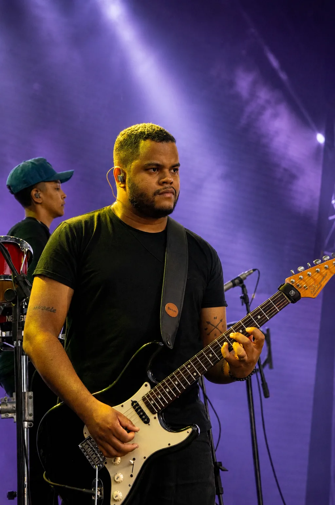
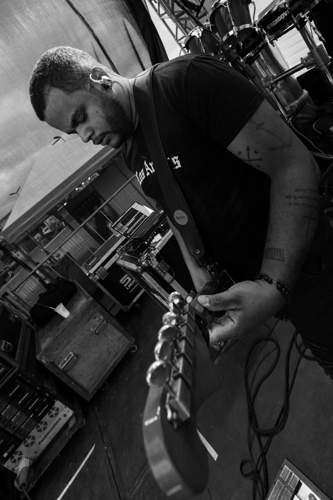

CAYQUE GOMES / GUITARRISTA E PROFESSOR
A guitarra
do piseiro,
na prática.
Levadas, timbres e acordes explicados do jeito que a mão realmente toca — direto da experiência de palco de Cayque.
Conteúdo completo em evolução
Acesso pelo checkout oficial do curso.

Música se aprende
tocando. E se compartilha.
Cayque é guitarrista e professor. A prática de palco, ensaio e estúdio foi virando também aula: uma forma de explicar o que a mão faz quando o ritmo pede.
Seu trabalho com guitarra dentro do piseiro aproxima músicos e alunos interessados nessa linguagem — com identificação especialmente forte no Nordeste, mesmo com Cayque tocando do Rio de Janeiro.
CONHEÇA O TRABALHO DE CAYQUE


RITMOS DE PISEIRO / O CURSO
Pra entender.
Não só copiar.
Uma linguagem de guitarra explicada a partir do que se toca.
O curso reúne a experiência prática de Cayque com levadas, timbres, acordes e a aplicação da guitarra dentro do piseiro. A proposta é ajudar você a entender melhor esses elementos e levá-los para a própria prática.
AULAS E MATERIAIS
Um curso que
segue crescendo.
Veja alguns dos conteúdos que já fazem parte do Ritmos de Piseiro.
- 01Guitarra no arrochaPadrão, Silvano Salles e Unha Pintada
- 02Dicionário de acordesACORDES
- 03A levada mais fácil do piseiroE como criar variações sobre ela
- 04Levadas e variações de piseiro atualParte 2
- 05Criando o timbre cleanDo zero
Não é um curso parado.
A equipe continua trabalhando na expansão do Ritmos de Piseiro, com novas aulas, conteúdos complementares e bônus sendo incorporados.
A prática que
vira aula.
A base apresentada pelo curso é a vivência de Cayque como guitarrista e professor. Sua experiência de palco, ensaio e estúdio é o ponto de partida para explicar levadas, timbres, acordes e a função da guitarra no piseiro.
A página de origem não apresenta depoimentos de alunos nem resultados quantificados; por isso, esta apresentação se limita à trajetória e aos materiais publicados pelo próprio curso.
VER TIKTOK DE CAYQUECURSO RITMOS DE PISEIRO
Leve essa
linguagem pra
sua guitarra.
Entre no curso e tenha acesso ao conteúdo que Cayque e a equipe continuam desenvolvendo para quem quer levar o piseiro para a prática.
de vendas de referência.
Você seguirá para o checkout oficial do curso.
Antes de
entrar.
O curso continua recebendo atualizações?
Sim. O Ritmos de Piseiro está sendo ampliado com novos conteúdos e atualizações.
O que encontro no curso?
Conteúdos de levadas, timbres e acordes aplicados à guitarra no piseiro, incluindo os tópicos listados nesta página. A equipe também está trabalhando em novas aulas, conteúdos complementares e bônus.
Qual é o valor atual?
O preço exibido na página de vendas de referência é R$ 97. Confira os detalhes vigentes no checkout oficial antes de concluir.
Como faço para entrar?
Use qualquer botão de acesso desta página. Você será direcionado ao checkout oficial do curso na Kiwify.
Onde vejo as condições de pagamento e acesso?
Consulte as informações apresentadas no checkout oficial antes de finalizar a compra. Não presumimos prazo de acesso, parcelamento ou garantia, pois esses detalhes não estão descritos na página de referência.
SUA GUITARRA. SUA PRÁTICA.
Um ritmo que
se aprende tocando.
CONHECER O CURSO — R$ 97 Veja se o Ritmos de Piseiro faz sentido para o momento da sua guitarra.